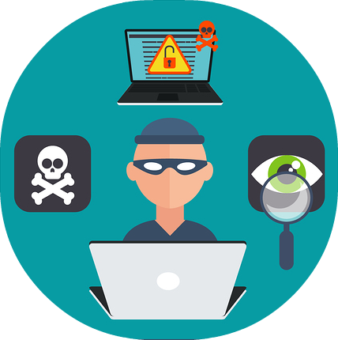

Cybersecurity

What does it do?
Cybersecurity is the term used for reducing the risk of access to digital systems over the internet*.
It involves encrypting the signals sent over the internet (Dan Craigen, Nadia Diakun-Thibault & Randy Purse 2014),
creating systems that are harder to access for unauthorised individuals, as well as more difficult to automate attempts to access (cryptography).
In this way, it secures data at three points - the end user's machine, the server sending the data, and the infrastructure that transmits it.
Cybersecurity is vital for modern infrastructure, as it prevents foreseeable attempts at compromising secure data, such as
customer records, proprietary technology, trade secrets, and other vulnerable or personal information.
Cybersecurity often covers the following key areas:
- The SOC (Security Operation Centre) which involves putting perimeter control processes in place to protect systems and access to the network.
A small internal team with outsourced SOC functions will respond to breaches in security by isolating end user machines.
Examples include someone who has been phished, where the SOC team will do diagnostics to ensure that no malicious code remains. - Data privacy policies ensure that controls, process, and other policies in place, are all made with respect to the tight control of data
classification and handling, by putting in place a class of data and then implementing the control requirements based on the highest classification
(as an example, classifications would start at highly confidential through to public) the higher the sensitivity, the greater the control environment required.
User Access Management pertains to various clearance levels a user may have for their industry. For example, a computer system might have admin users versus end-level users, wherein admin has the ability to change settings that the end-user could not. In addition, users may have only access to data relating to their job: E.g. a risk manager would not need access to systems that had customer data, and a customer service operator would not need access to systems that had risk management data. - IT Governance risks and controls – using SOX (Sarbanes Oxley Act 202 section 404 requirements) is an American federal legislation pertaining to financial reporting. It is being implemented here in Australia (Anand 2008), and deals with the accuracy and completeness of IT applications and general controls from a financial reporting perspective. What is considered paramount here is protecting whatever sensitive data (critical encryption keys, etc) may exist in the respective industries in which cybersecurity is implemented.^
- Business-facing security architects - to make sure that all new initiatives have one or more cybersecurity employees involved for consideration of cybersecurity risks.
- Cybersecurity education and privacy education are essential to good cybersecurity, as the human factor is one that is easily manipulated, especially in a large user base. In particular, payroll employees and finance employees. Organisations must ensure that cybersecurity is front-of-mind for the employees, to ensure that when the organisation is making decisions, that they are always taking into consideration data loss, particularly in sensitive industries which are heavily regulated.
NIST (National Institute of Standards and Technology) is an American organisation which advises its members of frameworks that can be used to increase cybersecurity (‘National Institute of Standards and Technology’ n.d.). These can be helpful for completing an assessment of an organisation for identification^ of gaps in security and risks apparent. The next phase is then to protect that information systems and assets through examples like user access management (above) or encryption of data. Then the organisation would have a provider such as Akamai or RSA who help organisations to manage their digital risk (‘Security, Cloud Delivery, Performance | Akamai’ n.d.; ‘RSA Cybersecurity and Digital Risk Management Solutions’ n.d.)^; as an example, RSA have Action360 as a tool *. It looks for phishing sites, it scans social media for references to the organisation, and it searches for any other kind of malicious sites.
They would, in the detect stage, be looking at their current software, operating systems, all internal systems and determining whether there are patches that need to be put in place, or whether there are any zero-day vulnerabilities(Singh, Joshi &Kanellopoulos 2019). Following detect in the NIST framework is to respond, generally organisations will have a response plan, communications, forensics and mitigation activities, then recover the systems to normal operations using recovery plans, implementation of patches and restoring affected systems.
What is the likely impact?

There are many examples of what happens when organisations have poor computer assets security (Desjardins 2019).
The main methods identified for data loss are due to hacking, poor security, accidental publishing, and "inside jobs", or an internal agent with malicious purposes.
The key impacts and outcomes for organisations are:
Significant reputational damage, due mainly to the fact that customer records are often exposed. This can be significantly more problematic depending on the industry.
Financial impacts, such as regulatory fines, customer remediation and costs related to restoring the systems, assets and implementing the effective controls.
Operational impacts, e.g. systems could be down and therefore the company may not be able to operate (Binfarè2020). Resources must be diverted in order to solve the problem, or are required to invoke manual processes.
Loss of IP - significant intellectual property loss may have an adverse effect on a company as this can be used in very competitive markets to undercut the company's own use of their IP through illegal imitation.
Legal action by customers - class actions are commonplace today where data breaches have occurred (Richie 2015) due to the potential damage to the customers' own lives.
Sony 2014: The Sony 2014 Hacker group Guardians of Peace released confidential data from Sony (Clare Sullivan 2016). It was believed to be a state-sponsored attack by North Korea. The public release of a yet-to-be-released film were among the threats, as well as exposure of employee personal information and salaries.
Marriott Starwood 2018 Breach: Marriot initially advised the public that up to 5.2 million guest records were exposed, however later revised this to up to 500 million (‘Marriott Announces Starwood Guest Reservation Database Security Incident’ n.d.).
How will this affect you?
As mentioned above, the key effect of poor cyber security practices can have a detrimental effect on individuals. Whether one is working for an organisation like Sony and one's employee information is leaked, or one is just a customer of the Marriot and one's personal data, such as loyal card details, address, date of birth are released, the results can be far reaching, up to and including impacting mental health. It was reported that the Ashley Maddison breach resulted in at least one user taking his own life as a result(Segall 2015), breaking up seemingly happy families and costing individuals in many other ways.
Identity theft is another significant issue for individuals, potentially taking years to deal with the resultant fall out. Initially this may be just getting one's money back into bank accounts, having to replace personal documents such as passports, or years later having to fix credit ratings due to loans being taken out under the individual's name.
If one is informed of a data breach affecting them, good cybersecurity practices (Dan Craigen, Nadia Diakun-Thibault & Randy Purse 2014) suggest that one should get as much information about the lost data.
Those practices include the following steps:
- Notify one's bank
- Change one's passwords
- Monitor one's accounts for unusual activity
- Check one's Credit Report
- Notify other identification bodies e.g. passport office.
The website “haveibeenpwned.com” (‘Have I Been Pwned: Check if your email has been compromised in a data breach’ n.d.) has a moderate database of emails that have been compromised in cybersecurity breaches.